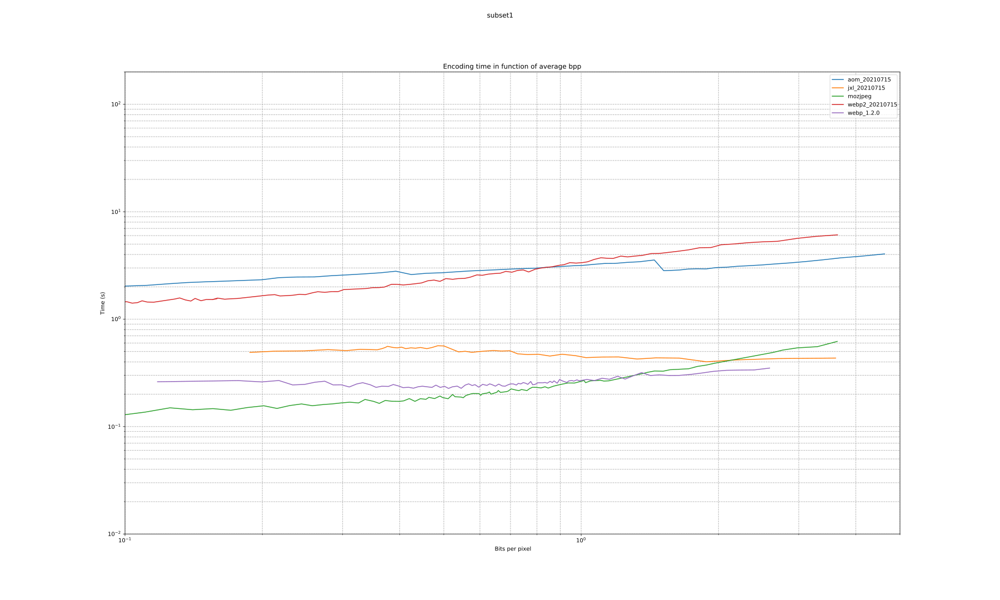

.svg)
This study compares 7 differents encoders, AOM AV1, HEIF X265, JPEG XL, WebP and WebP2. We use five algorithms in order to compare each format:
The image set is comprised of 49 images from the subset 1 maintained by Xiph. All images are RGB PNG.
https://github.com/AOMediaCodec/libavif. The version used is 0.9.2.https://aomedia.googlesource.com/aom/ The version used is v3.1.1 and git revision 70d2ea60e3ca5f11d4e153b140a72890c13b2f51.https://github.com/strukturag/libheif. The version used is 1.12.0, with x265 3.5+1-f0c1022b6.https://github.com/mozilla/mozjpeg. The version used is 4.0.3.https://github.com/libjxl/libjxl. The version used is 0.3.7 and git revision b1f80161cfc3c0ba4024cd7d5d14bb74061ee7bf.https://chromium.googlesource.com/webm/libwebp. The version used is 1.2.0.https://chromium.googlesource.com/codecs/libwebp2/. The version used is built from GIT revision 3724e165a6df9260eb30b9a731a9f9594d3c5703 and git revision 09c86afba566d92bbef5318872c1662bf9ddec6b.vmaf, provided by Netflix: https://github.com/Netflix/vmaf. The version used is 2.2.0. Each metric compares two Y4M files.https://github.com/libjxl/libjxl/tree/main/tools The version used is built from version 0.3.7.https://github.com/kornelski/dssim The version used is 3.1.0.https://github.com/libjxl/libjxl/tree/main/tools The version used is built from from version 0.3.7.ffmpeg is used for image formats conversion. The version used is ffmpeg 4.4.identify is used to determine the width and height of images. The version used is ImageMagick 6.9.11-27.All images are compressed losslessly and over a range of qualities for each codec:
AOM 3.1.1:
avifenc --lossless -c aom -s d -o [output] [input(PNG)]avifenc -a end-usage=q -a tune=butteraugli -a sharpness=3 --min 0 --max 63 -a cq-level=$quality -o [output] [input(PNG)]AOM 20210715:
avifenc --lossless -c aom -s d -o [output] [input(PNG)]avifenc -a end-usage=q -a tune=butteraugli -a sharpness=3 --min 0 --max 63 -a cq-level=$quality -o [output] [input(PNG)]HEIF 1.12.0:
heif-enc -L -p chroma=444 --matrix_coefficients=0 -o [output] [input(PNG)]heif-enc -p chroma=444 --matrix_coefficients=0 --quality [output] [input(PNG)]JPEG XL 0.3.7:
cjxl [input(PNG)] [output] -v -q $qualitycjxl [input(PNG)] [output] -v -q 100JPEG XL 20210715:
cjxl [input(PNG)] [output] -v -q $qualitycjxl [input(PNG)] [output] -v -q 100MozJPEG 4.0.3:
cjpeg -rgb -quality 100 [input(PNG)] > [output]cjpeg -quality $quality [input(PNG)] > [output]WebP 1.2.0:
cwebp -mt -z 9 -lossless -o [output] [input(PNG)]cwebp -mt -q $quality -o [output] [input(PNG)]WebP2 20201204:
cwp2 -mt 2 -uv_mode 2 -q 100 -o [output] [input(PNG)]cwp2 -mt 2 -uv_mode 2 -q $quality -o [output] [input(PNG)]The Python script used to generate the compressed images are available on the GIT repository.
The images which will be displayed on the website are then chosen among all compressed images, using the following criteria:
The Python script used to select the compressed images are available on the GIT repository.
For each codec and image, the encoding and decoding speeds for lossless compression are sampled using Python timeit.
The arithmetic mean of encoding and decoding speeds are calculated over the entire image set. We then determine a Weissman score for each codec using the following formula:
where r is the compression ratio over PNG filesize, T the time required to compress, ̅r and ̅T the same metrics for the standard compressor, and alpha is a scaling constant.
The standard compressor used is the compression of a JPG image using mozjpeg.
For each codec and image, we apply the following metrics, SSimulacra, DSSIM, Butteraugli, SSIM, CIEDE2000, MSSSIM, PSNR-HVS-M and VMAF, over image samples of increasing quality. For VMAF, we use the trained model vmaf_v0.6.1 given by Netflix.
For SSimulacra and DSSIM, Butteraugli, we first decode the compressed image to PNG then we apply the metrics over each sample, comparing it to the original image.
For SSIM, CIEDE2000, MSSSIM, PSNR-HVS-M and VMAF, on each sample, we first decode the compressed image to PNG, then export the resulting file to 4:2:0 Y4M using FFMPEG (ffmpeg -y -i [input] -pix_fmt yuv444p -vf scale=in_range=full:out_range=full [output]). Finally we apply the metrics over each sample, comparing it to the original image.
For each codec, we calculate the arithmetic mean of each metric over the entire set of images, weighted by the area of the corresponding picture, for the samples of increasing quality:
We also determine the average bits per pixel for each quality sample:
The following archives contain the raw data in csv format for subset1 and subset2:
| format | avg_bpp | avg_compression_ratio | avg_space_saving | wavg_encode_time | wavg_decode_time | weissman_score |
|---|---|---|---|---|---|---|
| heif_1.12.0 | 9.931 | 1.3219 | 0.24354 | 16.09 | 5.4341 | 1.3500 |
| jxl_20210715 | 10.097 | 1.3002 | 0.23088 | 31.52 | 3.0728 | 1.2416 |
| webp2_20210715 | 10.266 | 1.2789 | 0.21807 | 27.98 | 6.3383 | 1.2354 |
| jxl_0.3.7 | 10.097 | 1.3002 | 0.23088 | 34.15 | 3.3576 | 1.2320 |
| webp_1.2.0 | 10.508 | 1.2494 | 0.19963 | 82.57 | 4.2148 | 1.0916 |
| webp2_20201204 | 10.397 | 1.2627 | 0.20805 | 93.47 | 6.5015 | 1.0912 |
| mozjpeg | 13.959 | 0.9405 | -0.06330 | 10.96 | 0.5793 | 1.0000 |
| aom_20210715 | 11.656 | 1.1263 | 0.11215 | 414.12 | 4.3691 | 0.8614 |
| aom_3.1.1 | 11.657 | 1.1262 | 0.11209 | 507.02 | 4.4280 | 0.8480 |

For each comparison algorithms, we plot the quality in dB or score in function of the mean bits per pixel on a logarithmic scale. We can then visualize which codec gives the best quality at a given bit per pixel (top left is better).
Please note that VMAF is more suitable as a video codec comparison tool, not an image one.